Dorsal Horn and Ventral Lateral White DE analysis
Chih-Hsuan Wu
Last updated: 2024-10-19
Checks: 7 0
Knit directory: DEanalysis/
This reproducible R Markdown analysis was created with workflowr (version 1.7.1). The Checks tab describes the reproducibility checks that were applied when the results were created. The Past versions tab lists the development history.
Great! Since the R Markdown file has been committed to the Git repository, you know the exact version of the code that produced these results.
Great job! The global environment was empty. Objects defined in the global environment can affect the analysis in your R Markdown file in unknown ways. For reproduciblity it’s best to always run the code in an empty environment.
The command set.seed(20230508) was run prior to running
the code in the R Markdown file. Setting a seed ensures that any results
that rely on randomness, e.g. subsampling or permutations, are
reproducible.
Great job! Recording the operating system, R version, and package versions is critical for reproducibility.
Nice! There were no cached chunks for this analysis, so you can be confident that you successfully produced the results during this run.
Great job! Using relative paths to the files within your workflowr project makes it easier to run your code on other machines.
Great! You are using Git for version control. Tracking code development and connecting the code version to the results is critical for reproducibility.
The results in this page were generated with repository version b100704. See the Past versions tab to see a history of the changes made to the R Markdown and HTML files.
Note that you need to be careful to ensure that all relevant files for
the analysis have been committed to Git prior to generating the results
(you can use wflow_publish or
wflow_git_commit). workflowr only checks the R Markdown
file, but you know if there are other scripts or data files that it
depends on. Below is the status of the Git repository when the results
were generated:
Ignored files:
Ignored: .Rhistory
Ignored: .Rproj.user/
Ignored: analysis/figure/
Ignored: data/.Rhistory
Untracked files:
Untracked: .DS_Store
Untracked: .gitignore
Untracked: analysis/analysis_humanspine.Rmd
Untracked: analysis/simulation_donor_effect.Rmd
Untracked: data/.DS_Store
Untracked: data/10X_DEresult_update.RData
Untracked: data/10X_DEresult_update2.RData
Untracked: data/10X_Kang_DEresult.RData
Untracked: data/10X_inputdata.RData
Untracked: data/10X_inputdata_DEresult.RData
Untracked: data/10X_inputdata_cpm.RData
Untracked: data/10X_inputdata_integrated.RData
Untracked: data/10X_inputdata_lognorm.RData
Untracked: data/10Xdata_annotate.rds
Untracked: data/Bcells.Rmd
Untracked: data/Bcellsce.rds
Untracked: data/Kang_DEresult.RData
Untracked: data/Kang_data.RData
Untracked: data/fallopian_tubes.RData
Untracked: data/fallopian_tubes_all.RData
Untracked: data/human/
Untracked: data/human_spine.RData
Untracked: data/human_spine_DEresult.RData
Untracked: data/mouse/
Untracked: data/permutation.RData
Untracked: data/permutation13.RData
Untracked: data/permutation2.RData
Untracked: data/splatter_simulation.RData
Untracked: data/splatter_simulation1.RData
Untracked: data/splatter_simulation2.RData
Untracked: data/splatter_simulation3.RData
Untracked: data/vstcounts.Rdata
Untracked: figure/
Unstaged changes:
Modified: analysis/.Rhistory
Modified: analysis/CD14+-Monocytes.Rmd
Modified: analysis/human_spine_overview.Rmd
Modified: code/DE_methods.R
Note that any generated files, e.g. HTML, png, CSS, etc., are not included in this status report because it is ok for generated content to have uncommitted changes.
These are the previous versions of the repository in which changes were
made to the R Markdown
(analysis/Dors_Horn_Vent_Lat_White.Rmd) and HTML
(docs/Dors_Horn_Vent_Lat_White.html) files. If you’ve
configured a remote Git repository (see ?wflow_git_remote),
click on the hyperlinks in the table below to view the files as they
were in that past version.
| File | Version | Author | Date | Message |
|---|---|---|---|---|
| Rmd | b100704 | C-HW | 2024-10-19 | workflowr::wflow_publish("./analysis/Dors_Horn_Vent_Lat_White.Rmd") |
source("./code/hippo_all_proportion.R")
source("./code/DE_methods.R")
source("./code/functions_in_rmd.R")
# load DE result generated from "analysis_humanspine.Rmd"
load("./data/human_spine_DEresult.RData")
load("./data/human_spine.RData")
load("./data/fallopian_tubes.RData")
library(ggplot2)
library(dplyr)
Attaching package: 'dplyr'The following objects are masked from 'package:stats':
filter, lagThe following objects are masked from 'package:base':
intersect, setdiff, setequal, unionlibrary(ggpubr)
library(SingleCellExperiment)Loading required package: SummarizedExperimentLoading required package: MatrixGenericsLoading required package: matrixStats
Attaching package: 'matrixStats'The following object is masked from 'package:dplyr':
count
Attaching package: 'MatrixGenerics'The following objects are masked from 'package:matrixStats':
colAlls, colAnyNAs, colAnys, colAvgsPerRowSet, colCollapse,
colCounts, colCummaxs, colCummins, colCumprods, colCumsums,
colDiffs, colIQRDiffs, colIQRs, colLogSumExps, colMadDiffs,
colMads, colMaxs, colMeans2, colMedians, colMins, colOrderStats,
colProds, colQuantiles, colRanges, colRanks, colSdDiffs, colSds,
colSums2, colTabulates, colVarDiffs, colVars, colWeightedMads,
colWeightedMeans, colWeightedMedians, colWeightedSds,
colWeightedVars, rowAlls, rowAnyNAs, rowAnys, rowAvgsPerColSet,
rowCollapse, rowCounts, rowCummaxs, rowCummins, rowCumprods,
rowCumsums, rowDiffs, rowIQRDiffs, rowIQRs, rowLogSumExps,
rowMadDiffs, rowMads, rowMaxs, rowMeans2, rowMedians, rowMins,
rowOrderStats, rowProds, rowQuantiles, rowRanges, rowRanks,
rowSdDiffs, rowSds, rowSums2, rowTabulates, rowVarDiffs, rowVars,
rowWeightedMads, rowWeightedMeans, rowWeightedMedians,
rowWeightedSds, rowWeightedVarsLoading required package: GenomicRangesLoading required package: stats4Loading required package: BiocGenerics
Attaching package: 'BiocGenerics'The following objects are masked from 'package:dplyr':
combine, intersect, setdiff, unionThe following objects are masked from 'package:stats':
IQR, mad, sd, var, xtabsThe following objects are masked from 'package:base':
anyDuplicated, aperm, append, as.data.frame, basename, cbind,
colnames, dirname, do.call, duplicated, eval, evalq, Filter, Find,
get, grep, grepl, intersect, is.unsorted, lapply, Map, mapply,
match, mget, order, paste, pmax, pmax.int, pmin, pmin.int,
Position, rank, rbind, Reduce, rownames, sapply, setdiff, table,
tapply, union, unique, unsplit, which.max, which.minLoading required package: S4Vectors
Attaching package: 'S4Vectors'The following objects are masked from 'package:dplyr':
first, renameThe following object is masked from 'package:utils':
findMatchesThe following objects are masked from 'package:base':
expand.grid, I, unnameLoading required package: IRanges
Attaching package: 'IRanges'The following objects are masked from 'package:dplyr':
collapse, desc, sliceLoading required package: GenomeInfoDbLoading required package: BiobaseWelcome to Bioconductor
Vignettes contain introductory material; view with
'browseVignettes()'. To cite Bioconductor, see
'citation("Biobase")', and for packages 'citation("pkgname")'.
Attaching package: 'Biobase'The following object is masked from 'package:MatrixGenerics':
rowMediansThe following objects are masked from 'package:matrixStats':
anyMissing, rowMedianslibrary(pheatmap)
library(gridExtra)
Attaching package: 'gridExtra'The following object is masked from 'package:Biobase':
combineThe following object is masked from 'package:BiocGenerics':
combineThe following object is masked from 'package:dplyr':
combinelibrary(reshape)
Attaching package: 'reshape'The following objects are masked from 'package:S4Vectors':
expand, renameThe following object is masked from 'package:dplyr':
renamelibrary(clusterProfiler)clusterProfiler v4.12.6 Learn more at https://yulab-smu.top/contribution-knowledge-mining/
Please cite:
Guangchuang Yu, Li-Gen Wang, Yanyan Han and Qing-Yu He.
clusterProfiler: an R package for comparing biological themes among
gene clusters. OMICS: A Journal of Integrative Biology. 2012,
16(5):284-287
Attaching package: 'clusterProfiler'The following object is masked from 'package:reshape':
renameThe following object is masked from 'package:IRanges':
sliceThe following object is masked from 'package:S4Vectors':
renameThe following object is masked from 'package:stats':
filterlibrary(enrichplot)
Attaching package: 'enrichplot'The following object is masked from 'package:ggpubr':
color_palettelibrary("org.Hs.eg.db")Loading required package: AnnotationDbi
Attaching package: 'AnnotationDbi'The following object is masked from 'package:clusterProfiler':
selectThe following object is masked from 'package:dplyr':
selectlibrary(pathview)##############################################################################
Pathview is an open source software package distributed under GNU General
Public License version 3 (GPLv3). Details of GPLv3 is available at
http://www.gnu.org/licenses/gpl-3.0.html. Particullary, users are required to
formally cite the original Pathview paper (not just mention it) in publications
or products. For details, do citation("pathview") within R.
The pathview downloads and uses KEGG data. Non-academic uses may require a KEGG
license agreement (details at http://www.kegg.jp/kegg/legal.html).
##############################################################################group1 = "Dors_Horn"
group2 = "Vent_Lat_White"
pair = c(group1, group2)
subgroupsce = sce_human_spine_filtered[, sce_human_spine_filtered$region%in%pair]
subgroup_Seurat = Seurat_human_spine_integrate[, Seurat_human_spine_integrate$region%in%pair]
cellgroup = ifelse(subgroupsce$region%in% group1, 1, 2)
genemean1 = rowMeans(counts(subgroupsce)[,cellgroup==1])
genemean2 = rowMeans(counts(subgroupsce)[,cellgroup==2])
subgroupsce@metadata$log2mean = log2(genemean1*genemean2)/2
subgroupsce@metadata$log2meandiff = log2(abs(genemean1-genemean2))
Wilcox_Seurat_df$avg_log2FC = - Wilcox_Seurat_df$avg_log2FCregion_palette = c(
"#A0522D", "#6A00FF", "#A4C400", "#F472D0",
"#0050EF", "#00ABA9", "#F0A30A", "#008A00",
"#647687", "#1BA1E2", "#FA6800", "#E3C800")
donors_palette <- c("#FDA4AF", "#FCD34D", "#BEF264", "#67E8F9", "#A5B4FC",
"#FF6F61", "#6A4C93", "#001688", "#009A33")
names(region_palette) = levels(as.factor(sce_human_spine_filtered$region))
names(donors_palette) = levels(as.factor(sce_human_spine_filtered$patient_ID))
annotation_colors = list(Region = region_palette[c(group1, group2)], Donor = donors_palette)
remove_y = theme(
axis.text.y = element_blank(),
axis.ticks.y = element_blank(),
axis.title.y = element_blank()
)Data summary
df = data.frame(Region = subgroupsce$region, Donor = subgroupsce$patient_ID, Count = 1)
df = aggregate(df$Count, list(df$Donor, df$Region), FUN = sum)
colnames(df) = c("Donor", "Region", "Count")
df = df[nrow(df):1,]
df$cumcount= c(t(aggregate(df$Count, list(rev(df$Region)), FUN = cumsum)[,-1]))
p_donor = ggplot(df, aes(x = Region, y = Count, fill = Donor)) +
geom_bar(stat = "identity") +
xlab("Region") +
ylab("Number of cells") +
scale_fill_manual(values = donors_palette) +
geom_text(aes(label=Count, y = cumcount), vjust = -0.2, size = 2) +
theme_bw() +
theme(panel.grid = element_blank())# gene count per cell by region
count_cell_df = data.frame(totalcount = apply(assays(subgroupsce)$counts, 2, sum), Region = as.factor(subgroupsce$region), Donor = as.factor(subgroupsce$patient_ID), Slide = as.factor(subgroupsce$Slide))
p_countbygroup = ggplot(count_cell_df, aes(x = totalcount, color = Region)) +
geom_histogram(aes(y=..density..), fill= "white", alpha=0.5, position="identity") +
geom_density(alpha = 0.2) +
xlab("Library size") +
ylab("Density") +
theme_bw() +
theme(panel.grid = element_blank()) +
scale_colour_manual(values = region_palette[c(group1, group2)]) +
xlim(c(0,5000))# gene count per cell by donor
p_countbydonor = ggplot(count_cell_df, aes(x = totalcount, color = Donor)) +
geom_histogram(aes(y=..density..),fill="white", alpha=0.5, position="identity") +
geom_density(alpha = 0.2) +
xlab("Library size") +
ylab("Density") +
theme_bw() +
theme(panel.grid = element_blank()) +
scale_color_manual(values = donors_palette) +
xlim(c(0,5000))# gene count per cell by slide
p_countbyslide = ggplot(count_cell_df, aes(x = totalcount, color = Slide)) +
geom_histogram(aes(y=..density..),fill="white", alpha=0.5, position="identity") +
geom_density(alpha = 0.2) +
xlab("Library size") +
ylab("Density") +
theme_bw() +
theme(panel.grid = element_blank()) +
xlim(c(0,5000))# zero proportion per gene
zeroprop_df = rbind(data.frame(zero_prop = rowMeans(assays(subgroupsce)$counts[, subgroupsce$region %in% group1]== 0), genemean = rowMeans(assays(subgroupsce)$counts[, subgroupsce$region %in% group1]), Region = group1),
data.frame(zero_prop = rowMeans(assays(subgroupsce)$counts[, subgroupsce$region %in% group2]== 0), genemean = rowMeans(assays(subgroupsce)$counts[, subgroupsce$region %in% group2]), Region = group2),
data.frame(zero_prop = rowMeans(assays(subgroupsce)$counts == 0), genemean = rowMeans(assays(subgroupsce)$counts), Region = "Combined")
)
zeroprop_df = zeroprop_df[which(zeroprop_df$genemean>0),]
zeroprop_df$Region =factor(zeroprop_df$Region, levels = c(group1, group2, "Combined"))
p_zeroprop = ggplot(zeroprop_df, aes(x = genemean, y = zero_prop)) +
geom_point(aes(shape = Region, color = Region), alpha=0.5, size = 1.2) +
scale_color_manual(values = c(region_palette[c(group1, group2)],Combined = "darkmagenta")) +
scale_shape_manual(values = c(16,16,3)) +
xlab("Gene mean") +
ylab("Zero proportion") +
xlim(c(0,10)) +
stat_function(fun = function(x) exp(-x), colour = "black") +
theme_bw() + theme(panel.grid = element_blank())ggarrange(p_zeroprop, p_countbygroup, p_countbyslide, p_countbydonor, nrow = 2, ncol = 2)Warning: Removed 17 rows containing missing values or values outside the scale range
(`geom_point()`).Warning: The dot-dot notation (`..density..`) was deprecated in ggplot2 3.4.0.
ℹ Please use `after_stat(density)` instead.
This warning is displayed once every 8 hours.
Call `lifecycle::last_lifecycle_warnings()` to see where this warning was
generated.`stat_bin()` using `bins = 30`. Pick better value with `binwidth`.Warning: Removed 44 rows containing non-finite outside the scale range
(`stat_bin()`).Warning: Removed 44 rows containing non-finite outside the scale range
(`stat_density()`).Warning: Removed 4 rows containing missing values or values outside the scale range
(`geom_bar()`).`stat_bin()` using `bins = 30`. Pick better value with `binwidth`.Warning: Removed 44 rows containing non-finite outside the scale range
(`stat_bin()`).Warning: Removed 44 rows containing non-finite outside the scale range
(`stat_density()`).Warning: Removed 32 rows containing missing values or values outside the scale range
(`geom_bar()`).`stat_bin()` using `bins = 30`. Pick better value with `binwidth`.Warning: Removed 44 rows containing non-finite outside the scale range
(`stat_bin()`).Warning: Removed 44 rows containing non-finite outside the scale range
(`stat_density()`).Warning: Removed 18 rows containing missing values or values outside the scale range
(`geom_bar()`).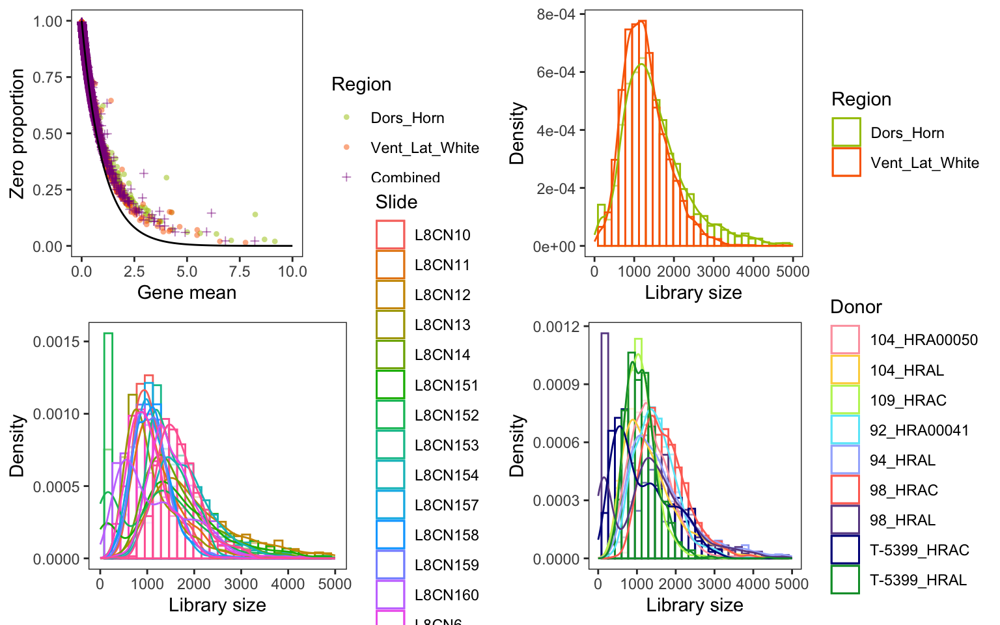
Difference in library size
ks_result = ks.test(subset(count_cell_df, Region == group1, totalcount)$totalcount, subset(count_cell_df, Region == group2, totalcount)$totalcount)Warning in ks.test.default(subset(count_cell_df, Region == group1,
totalcount)$totalcount, : p-value will be approximate in the presence of tiest_test = t.test(subset(count_cell_df, Region == group1, totalcount)$totalcount, subset(count_cell_df, Region == group2, totalcount)$totalcount)
print(ks_result)
Asymptotic two-sample Kolmogorov-Smirnov test
data: subset(count_cell_df, Region == group1, totalcount)$totalcount and subset(count_cell_df, Region == group2, totalcount)$totalcount
D = 0.12804, p-value < 2.2e-16
alternative hypothesis: two-sidedprint(t_test)
Welch Two Sample t-test
data: subset(count_cell_df, Region == group1, totalcount)$totalcount and subset(count_cell_df, Region == group2, totalcount)$totalcount
t = 17.059, df = 7783.8, p-value < 2.2e-16
alternative hypothesis: true difference in means is not equal to 0
95 percent confidence interval:
235.2685 296.3577
sample estimates:
mean of x mean of y
1549.826 1284.013 Number of DEGs from each method
dflist = list(pois_glmm_df,
binom_glmm_df,
DESeq2.muscat,
edgeR.cpm,
MAST_donor_df,
Wilcox_Seurat_df,
# MMdream,
MMvst
# MMpoisson
)
titlelist = c("Poisson-glmm_UMI",
"Binomial-glmm_UMI",
"pb-DESeq2_UMI",
"pb-edgeR_CPM",
"MAST_CPM",
"Wilcox_int",
# "MMdream",
"MMvst_VST"
# "MMpoisson_UMI"
)
number_input_hits = data.frame(DEGs = integer(0), Input = integer(0))
pois_glmm_inputgene = pois_glmm_df$genes[!is.na(pois_glmm_df$hits)]
for (df in dflist){
number_input_hits = rbind(number_input_hits,
c(sum(!is.na(df$hits)),
sum(df$hits, na.rm = T)))
}
colnames(number_input_hits) = c("Inputs", "DEGs")
number_input_hits$method = titlelist
number_input_hits = melt(number_input_hits, id = "method")
colnames(number_input_hits)[2:3] = c("Gene", "Number_of_genes")# pdf("../submission preparation/graph_panels/panel4/input_hits.pdf", width = 8, height = 8)
ggplot(data=number_input_hits, aes(x=factor(method,
levels = titlelist), y=Number_of_genes, fill = Gene)) +
geom_bar(stat="identity", position=position_dodge()) +
geom_text(aes(label=Number_of_genes), vjust=-0.2, position=position_dodge(0.9), size = 2) +
theme_bw() + theme(panel.grid = element_blank()) +
theme(axis.text.x = element_text(angle = 20, margin = margin(t = 15))) +
scale_fill_manual(values = c("#BCAAA4", "#5D4037")) +
xlab("") +
ylab("Number of genes") +
ggtitle(paste("DEGs summary"))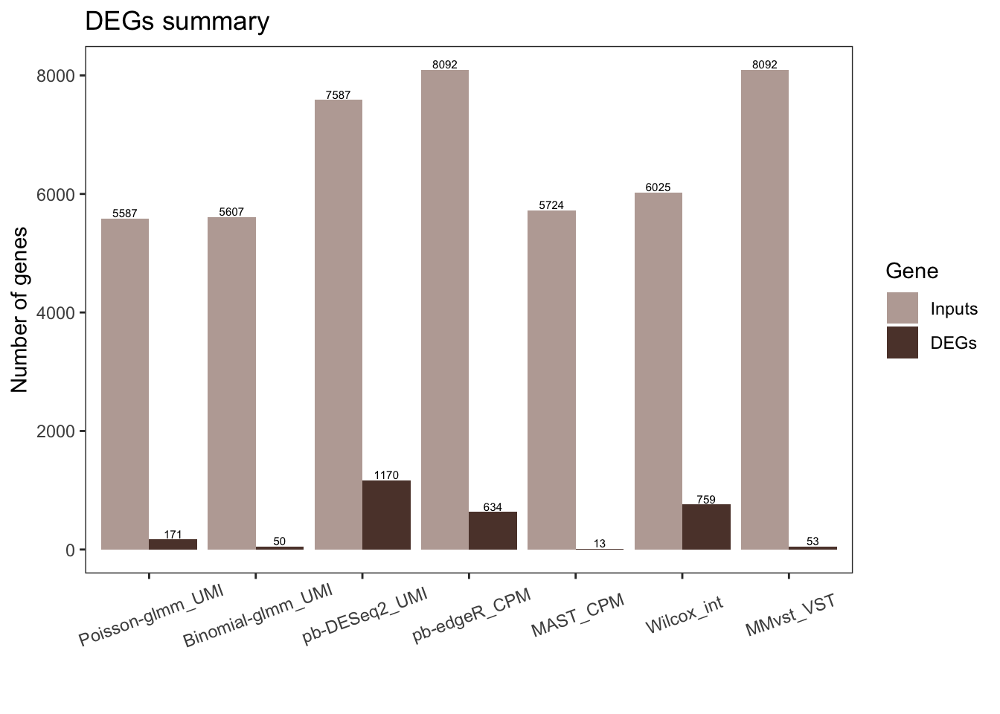
# dev.off()Volcano plot
pvalcutoff = 0.05
v = 1.5
log2FCcutoff = log2(v)
p = list()
for (i in 1:length(dflist)){
if(i %in% 6){
xvar = 'avg_log2FC'
yvar = 'p_val_adj'
}else{
xvar = 'log2FC'
yvar = 'BH'
}
if (nrow(dflist[[i]])==0){next}
p[[i]] = ggplot(na.omit(data.frame(dflist[[i]])), aes_string(x = xvar, y = sprintf("-log10(%s)", yvar), colour = "hits")) +
geom_point(alpha = 0.5, size = 0.5) +
labs(color = "hits") +
geom_hline(yintercept=-log10(pvalcutoff),linetype=2) +
geom_vline(xintercept=log2FCcutoff,linetype=2) +
geom_vline(xintercept=-log2FCcutoff,linetype=2) +
ggtitle(titlelist[i]) +
theme_bw() +
theme(panel.grid = element_blank()) +
scale_color_manual(values = c("gray", "blue")) +
labs(color = "DEGs") +
xlim(c(-3,3)) +
ylim(c(0,50)) +
xlab("Log2 Fold Change") +
ylab("-Log10 (adj.pval)")
}Warning: `aes_string()` was deprecated in ggplot2 3.0.0.
ℹ Please use tidy evaluation idioms with `aes()`.
ℹ See also `vignette("ggplot2-in-packages")` for more information.
This warning is displayed once every 8 hours.
Call `lifecycle::last_lifecycle_warnings()` to see where this warning was
generated.figure = ggarrange(plotlist = p, common.legend = TRUE, legend="bottom", nrow = 2, ncol = 4)Warning: Removed 121 rows containing missing values or values outside the scale range
(`geom_point()`).Warning: Removed 121 rows containing missing values or values outside the scale range
(`geom_point()`).Warning: Removed 55 rows containing missing values or values outside the scale range
(`geom_point()`).Warning: Removed 8 rows containing missing values or values outside the scale range
(`geom_point()`).Warning: Removed 6 rows containing missing values or values outside the scale range
(`geom_point()`).Warning: Removed 56 rows containing missing values or values outside the scale range
(`geom_point()`).Warning: Removed 122 rows containing missing values or values outside the scale range
(`geom_point()`).# Annotate the figure by adding a common labels
annotate_figure(figure,
top = paste("Volcano plot"),
bottom = text_grob(paste( "log2FC cutoff ", paste0("log2(",v,")"),"; adj.pval cutoff", pvalcutoff)
, x = 0.99, just = "right")
)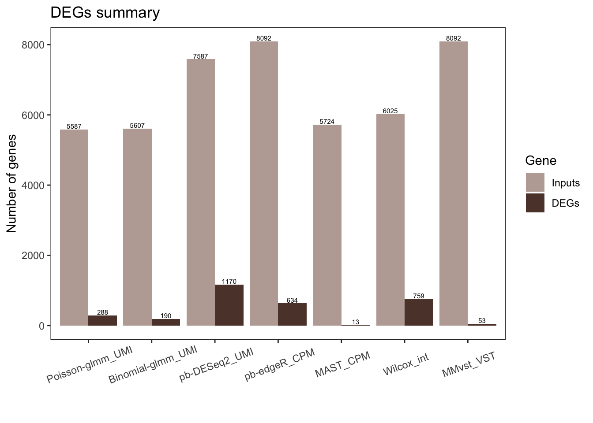
Histogram of p-value/adj.p-value
p = list()
for (i in 1:length(dflist)){
if (nrow(dflist[[i]])==0){next}
df = data.frame(genes = dflist[[i]]$genes)
if(i %in% 6){
df = cbind(df, dflist[[i]][,c("p_val", "p_val_adj")])
}else{
df = cbind(df, dflist[[i]][,c("pval", "BH")])
}
p[[i]] = ggplot(melt(df,id = "genes"), aes(x=value, color=variable)) +
geom_histogram(fill="white", alpha=0.5, position="identity") + theme_bw() + theme(panel.grid = element_blank()) + xlab(NULL) + ylab("Count") +
coord_cartesian(ylim = c(0, 3000)) +
ggtitle(titlelist[i]) + scale_colour_discrete(guide = guide_legend(title = NULL),labels = c("p-value", "adj.p-value"))
}
figure = ggarrange(plotlist = p, common.legend = TRUE, legend="bottom", nrow = 2, ncol = 4)`stat_bin()` using `bins = 30`. Pick better value with `binwidth`.Warning: Removed 5010 rows containing non-finite outside the scale range
(`stat_bin()`).`stat_bin()` using `bins = 30`. Pick better value with `binwidth`.Warning: Removed 5010 rows containing non-finite outside the scale range
(`stat_bin()`).`stat_bin()` using `bins = 30`. Pick better value with `binwidth`.Warning: Removed 4970 rows containing non-finite outside the scale range
(`stat_bin()`).`stat_bin()` using `bins = 30`. Pick better value with `binwidth`.
`stat_bin()` using `bins = 30`. Pick better value with `binwidth`.
`stat_bin()` using `bins = 30`. Pick better value with `binwidth`.
`stat_bin()` using `bins = 30`. Pick better value with `binwidth`.
`stat_bin()` using `bins = 30`. Pick better value with `binwidth`.annotate_figure(figure)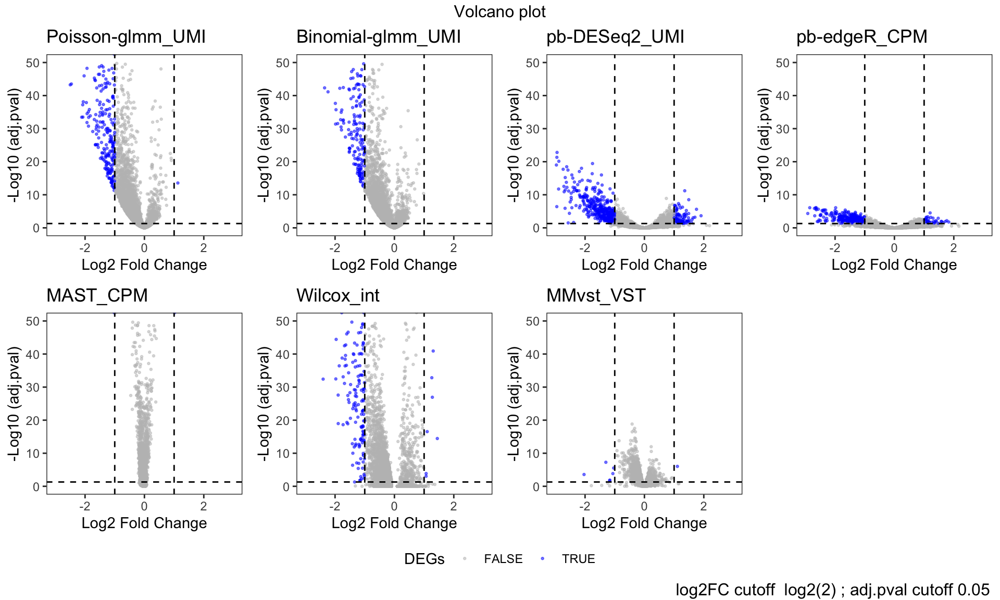
P-Value comparison across different methods
value = "pval"
p = list()
for (i in 2:length(dflist)){
if (nrow(dflist[[i]])==0){next}
if (value == "pval"){
xlimit = c(0,1)
ylimit = c(0,1)
if (is.null(dflist[[i]]$pval)){
x = dflist[[i]]$p_val
}else
x = dflist[[i]]$pval
}
if (value == "log2FC"){
xlimit = c(-3,3)
ylimit = c(-3,3)
if (is.null(dflist[[i]]$log2FC)){
x = dflist[[i]]$avg_log2FC
}else
x = dflist[[i]]$log2FC
}
y = dflist[[1]][match(dflist[[i]]$genes, dflist[[1]]$genes),value]
p[[i-1]] = ggplot(na.omit(data.frame(x = x, y = y)), aes(x = x, y = y)) +
geom_point(alpha = 0.5, size = 0.5) + theme_minimal() + xlim(xlimit) + ylim(ylimit)+
xlab(titlelist[i]) + ylab(titlelist[1])
}
figure = ggarrange(plotlist = p,nrow = 2, ncol = 4)
# Annotate the figure by adding a common labels
annotate_figure(figure,
top = paste(value, "comparison"))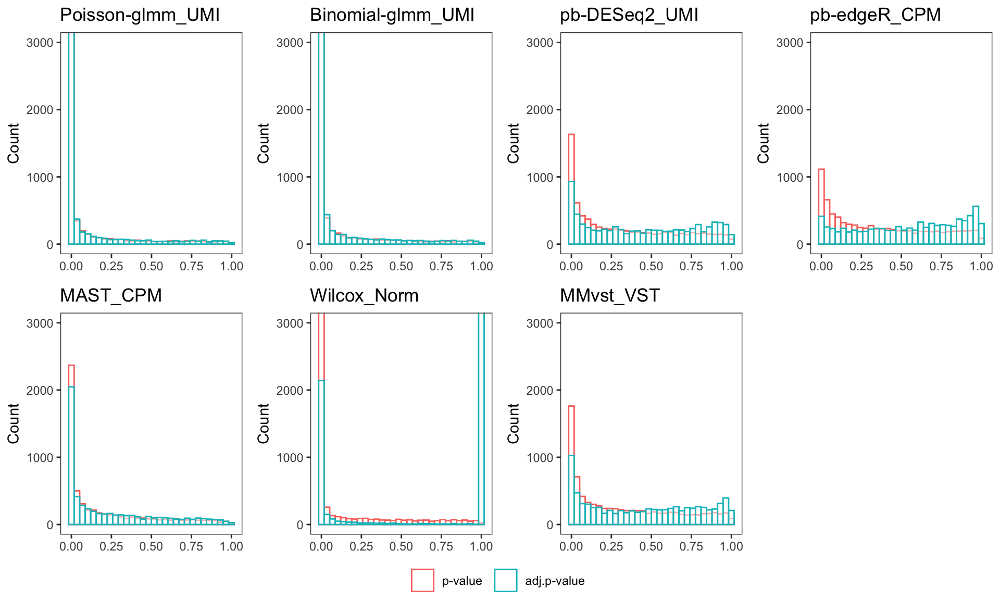
Log2 fold change comparison across different methods
value = "log2FC"
p = list()
for (i in 2:length(dflist)){
if (nrow(dflist[[i]])==0){next}
if (value == "pval"){
xlimit = c(0,1)
ylimit = c(0,1)
if (is.null(dflist[[i]]$pval)){
x = dflist[[i]]$p_val
}else
x = dflist[[i]]$pval
}
if (value == "log2FC"){
xlimit = c(-3,3)
ylimit = c(-3,3)
if (is.null(dflist[[i]]$log2FC)){
x = dflist[[i]]$avg_log2FC
}else
x = dflist[[i]]$log2FC
}
y = dflist[[1]][match(dflist[[i]]$genes, dflist[[1]]$genes),value]
p[[i-1]] = ggplot(na.omit(data.frame(x = x, y = y)), aes(x = x, y = y)) +
geom_point(alpha = 0.5, size = 0.5) + theme_minimal() + xlim(xlimit) + ylim(ylimit)+
xlab(titlelist[i]) + ylab(titlelist[1])
}
figure = ggarrange(plotlist = p,nrow = 2, ncol = 4)Warning: Removed 2 rows containing missing values or values outside the scale range
(`geom_point()`).Warning: Removed 5 rows containing missing values or values outside the scale range
(`geom_point()`).Warning: Removed 4 rows containing missing values or values outside the scale range
(`geom_point()`).Warning: Removed 2 rows containing missing values or values outside the scale range
(`geom_point()`).
Removed 2 rows containing missing values or values outside the scale range
(`geom_point()`).
Removed 2 rows containing missing values or values outside the scale range
(`geom_point()`). # Annotate the figure by adding a common labels
annotate_figure(figure,
top = paste(value, "comparison"))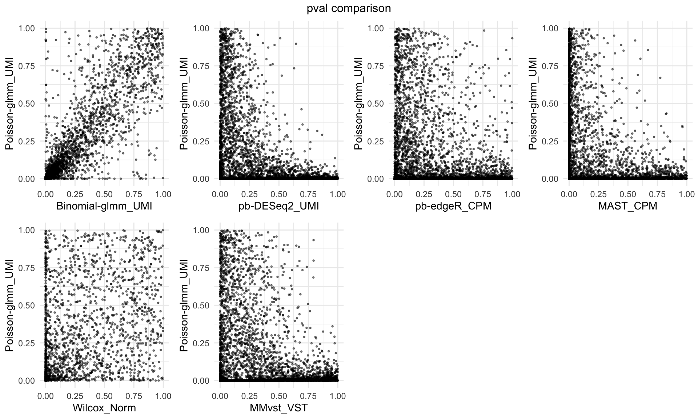
Violin plot of log2mean of DEGs
p = list()
df = data.frame()
clustername = pair
for (i in 1:length(dflist)){
if (nrow(dflist[[i]])==0){next}
if (sum(dflist[[i]]$hits, na.rm = T)==0){next}
hits_gene = dflist[[i]]$genes[which(dflist[[i]]$hits)]
if(length(hits_gene)>1){fun = rowMeans}else{fun = mean}
for (j in 1:2){
cellind = subgroupsce$region %in% clustername[j]
df = rbind(df, data.frame(Log2mean = log2(fun(assays(subgroupsce)$counts[hits_gene,cellind])), Group = clustername[j], method = titlelist[i]))
}
}ggplot(df, aes(x = factor(method,levels = titlelist), y=Log2mean, fill = factor(Group))) +
geom_violin() +
theme_bw() +
theme(panel.grid = element_blank()) +
ylim(c(-3,4)) +
xlab("") +
theme(axis.text.x = element_text(angle = 20, margin = margin(t = 15))) +
labs(fill = "Region") +
scale_fill_manual(values = region_palette[c(group1, group2)])Warning: Removed 2993 rows containing non-finite outside the scale range
(`stat_ydensity()`).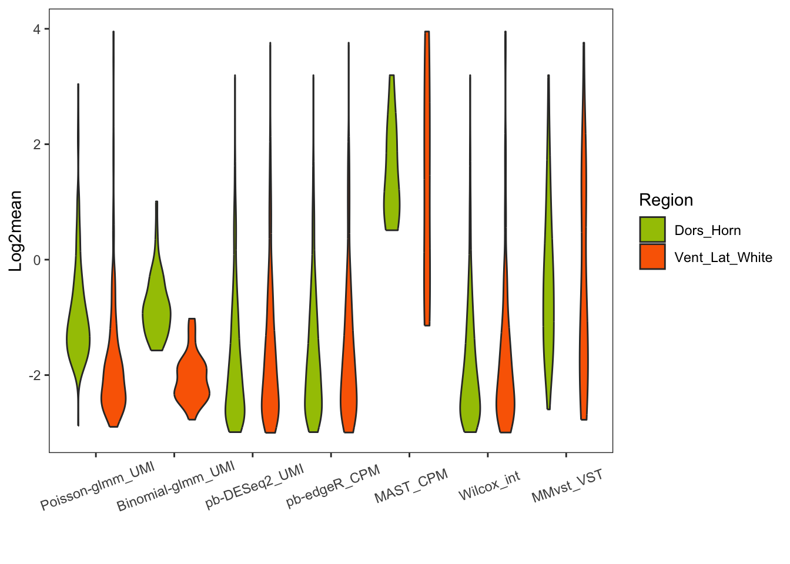
Violin plot of gene expression frequency of DEGs
p = list()
df = data.frame()
clusterlist = list(unique(sce_human_spine_filtered$region), group1, group2)
clustername = c("All region", group1, group2)
for (i in 1:length(dflist)){
if (nrow(dflist[[i]])==0){next}
if (sum(dflist[[i]]$hits, na.rm = T)==0){next}
hits_gene = dflist[[i]]$genes[which(dflist[[i]]$hits)]
if(length(hits_gene)>1){fun = rowMeans}else{fun = mean}
for (j in 1:3){
cellind = sce_human_spine_filtered$region %in% clusterlist[[j]]
df = rbind(df, data.frame(freq = fun(assays(sce_human_spine_filtered)$counts[hits_gene,cellind]>0), cluster = clustername[j], method = titlelist[i]))
}
}
levels(df$cluster) = clusternameggplot(df, aes(x = factor(method,levels = titlelist), y=freq, fill = factor(cluster, levels = levels(cluster)))) +
geom_violin() +
theme_bw() +
theme(panel.grid = element_blank()) +
ylab("Gene expression frequency") +
ylim(c(0,1)) +
xlab("") +
scale_fill_manual(values = c("All region" = "gray", region_palette[c(group1, group2)]), breaks = levels(df$cluster)) +
labs(fill = "Region") +
theme(axis.text.x = element_text(angle = 20, margin = margin(t = 15))) 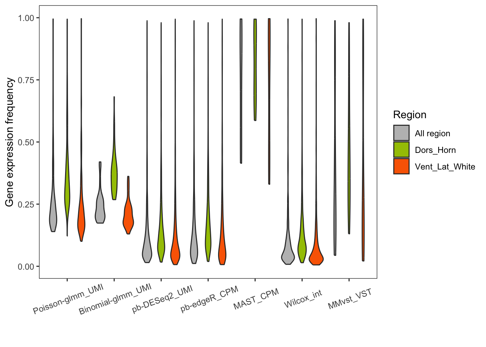
Upset plot
library(UpSetR)
all_genes = c()
for(df in dflist){
all_genes = c(all_genes, df$genes[which(df$hits)])
}
all_genes = unique(all_genes)
# Create a binary matrix where rows are genes and columns represent methods
upset_data = data.frame(gene = all_genes)
for (i in seq_along(dflist)){
title = titlelist[i]
upset_data[[title]] = as.numeric(all_genes %in% dflist[[i]]$genes[which(dflist[[i]]$hits)])
}
# Generate the upset plot
upset(upset_data[,-1],
sets = rev(titlelist),
keep.order = TRUE,
order.by = "freq")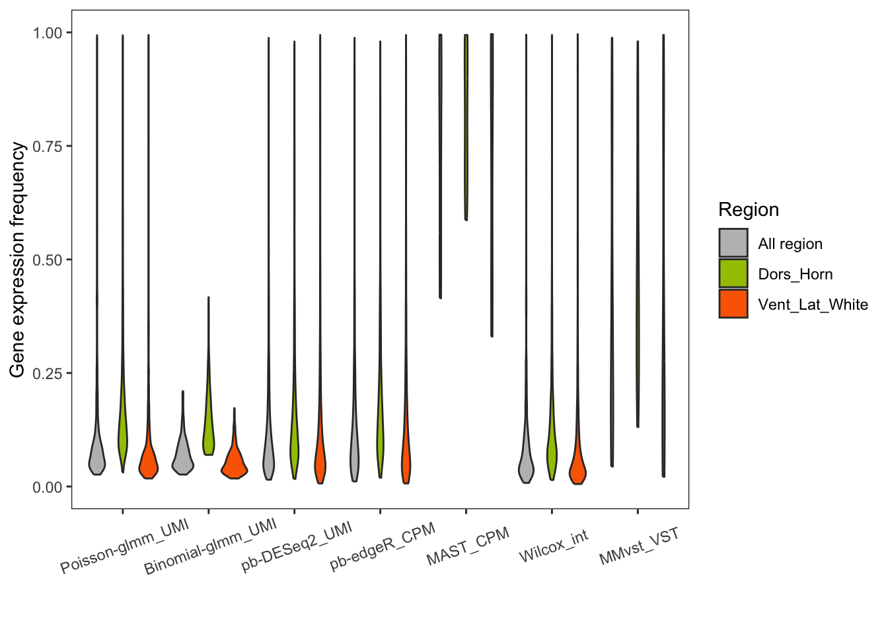
Heatmap of top DEGs
Poisson-glmm DEGs
sort_log2FC = sort(abs(pois_glmm_df$log2FC[pois_glmm_df$hits]), index.return = T, decreasing = T)
hitgenes = pois_glmm_df$genes[which(pois_glmm_df$hits)][sort_log2FC$ix]
mat = subgroupsce@assays@data$counts[hitgenes,]
#row annotation
annotation_log2FC = data.frame(abs_log2FC = abs(pois_glmm_df$log2FC[match(hitgenes,pois_glmm_df$genes)]))
rownames(annotation_log2FC) = rownames(mat)
#col annotation
annotation_df = data.frame(Donor = subgroupsce$patient_ID, Region = subgroupsce$region)
rownames(annotation_df) = colnames(mat)
annotation_df = annotation_df[with(annotation_df, order(Region, Donor)), ]
# cell level
pheatmap(mat[,rownames(annotation_df)],
main = paste0("Poisson-glmm DEGs\nin UMI counts (", nrow(mat)," DEGs)"),
annotation_col = annotation_df,
annotation_row = annotation_log2FC,
annotation_colors = annotation_colors,
cluster_rows=F, cluster_cols=F,
show_colnames = F, show_rownames = F,
annotation_names_row = F,
color=colorRampPalette(c("navy", "white", "red"))(10), breaks = seq(0,3, length.out = 10))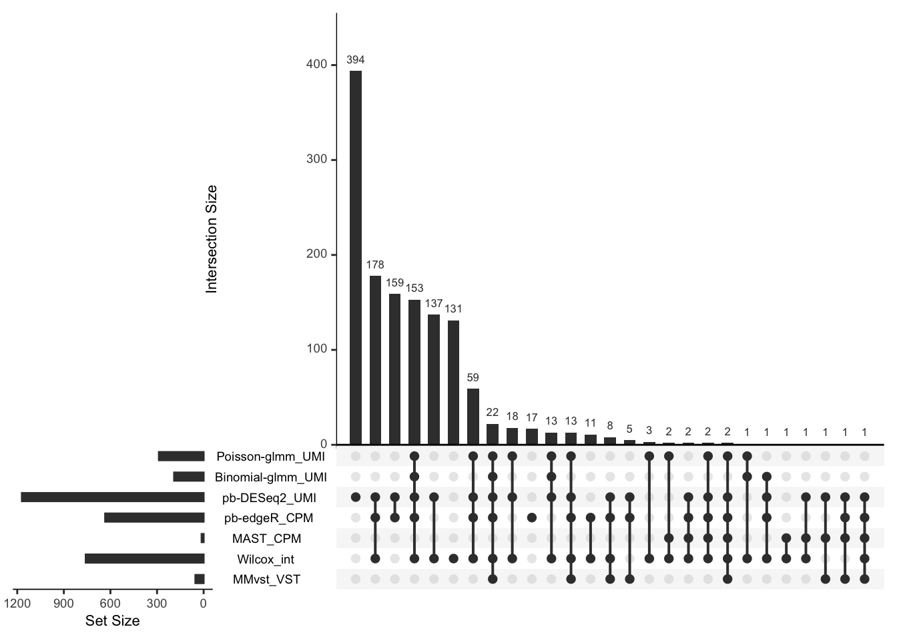
Additional DEGs from other methods
Wilcox
sort_log2FC = sort(abs(Wilcox_Seurat_df$avg_log2FC[Wilcox_Seurat_df$hits]), index.return = T, decreasing = T)
hitgenes_wilcox = Wilcox_Seurat_df$genes[which(Wilcox_Seurat_df$hits)][sort_log2FC$ix]
hits_notin_glmm = na.omit(hitgenes_wilcox[!hitgenes_wilcox%in%hitgenes])
mat = subgroupsce@assays@data$counts[hits_notin_glmm,]
# cell level
pheatmap(mat[,rownames(annotation_df)],
main = paste0("Wilcox DEGs \nnot identified by Poisson-glmm (",nrow(mat)," DEGs)"),
annotation_col = annotation_df,
annotation_colors = annotation_colors,
cluster_rows=F, cluster_cols=F,
show_colnames = F, show_rownames = F,
annotation_names_row = F,
color=colorRampPalette(c("navy", "white", "red"))(10), breaks = seq(0,3, length.out = 10))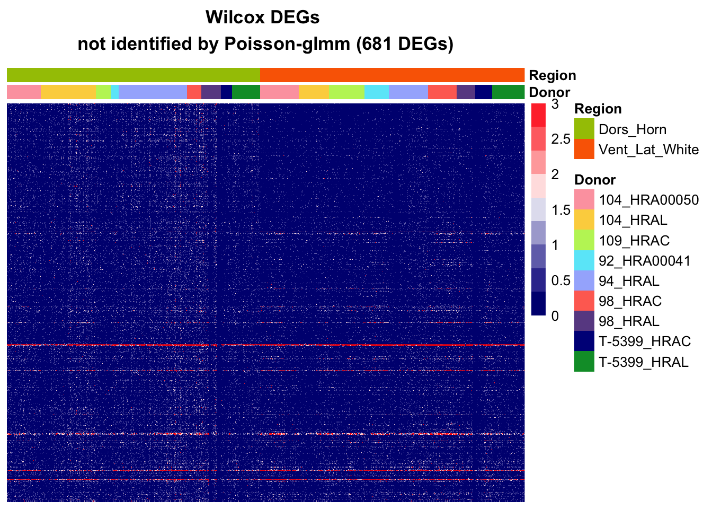
pb-DESeq2
sort_log2FC = sort(abs(DESeq2.muscat$log2FC[DESeq2.muscat$hits]), index.return = T, decreasing = T)
hitgenes_deseq2 = DESeq2.muscat$genes[which(DESeq2.muscat$hits)][sort_log2FC$ix]
hits_notin_glmm = na.omit(hitgenes_deseq2[!hitgenes_deseq2%in%hitgenes][1:600])
mat = subgroupsce@assays@data$counts[hits_notin_glmm,]
# cell level
pheatmap(mat[,rownames(annotation_df)],
main = paste0("pb-DESeq2 DEGs \nnot identified by Poisson-glmm (",nrow(mat)," DEGs)"),
annotation_col = annotation_df,
annotation_colors = annotation_colors,
cluster_rows=F, cluster_cols=F,
show_colnames = F, show_rownames = F,
annotation_names_row = F,
color=colorRampPalette(c("navy", "white", "red"))(10), breaks = seq(0,3, length.out = 10))
pdf("~/Google Drive/My Drive/spatial/10X/graph_panels/panel7/heatmap_deseq2.pdf", width = 5, height = 5)
pheatmap(mat[,rownames(annotation_df)],
main = paste0("pb-DESeq2 DEGs \nnot identified by Poisson-glmm (",nrow(mat)," DEGs)"),
annotation_col = annotation_df,
annotation_row = annotation_log2FC,
annotation_colors = annotation_colors,
cluster_rows=F, cluster_cols=F,
show_colnames = F, show_rownames = F,
annotation_names_row = F,
color=colorRampPalette(c("navy", "white", "red"))(10), breaks = seq(0,3, length.out = 10))
dev.off()MA plot
xvar = subgroupsce@metadata$log2mean
xlimits = c(-6,6)
xLabel = "Log2 mean"
p = list()
for (i in 1:length(dflist)){
if(is.null(dflist[[i]]$genes)){
x = xvar[match(rownames(dflist[[i]]), names(xvar))]
}else{
x = xvar[match(dflist[[i]]$genes,names(xvar))]
}
if(is.null(dflist[[i]]$log2FC)){
y = dflist[[i]]$avg_log2FC
}else{
y = dflist[[i]]$log2FC
}
p[[i]] = ggplot(na.omit(data.frame(x = x, y = y, DEGs = dflist[[i]]$hits)), aes(x = x, y = y, colour = DEGs)) +
geom_point(alpha = 0.5, size = 0.5) +
geom_hline(yintercept=log2(1.5),linetype=2) +
geom_hline(yintercept=-log2(1.5),linetype=2) +
ggtitle(titlelist[i]) + theme_minimal() + xlim(xlimits) + ylim(c(-4,4)) +
scale_color_manual(values = c("gray", "blue")) +
xlab(xLabel) + ylab("Log2 Fold Change") + theme(legend.position = "bottom")
}
fig_FC_mean = ggarrange(plotlist = p,common.legend = TRUE, legend = "right", ncol = 4, nrow = 2)Warning: Removed 2 rows containing missing values or values outside the scale range
(`geom_point()`).Warning: Removed 176 rows containing missing values or values outside the scale range
(`geom_point()`).Warning: Removed 134 rows containing missing values or values outside the scale range
(`geom_point()`).Warning: Removed 175 rows containing missing values or values outside the scale range
(`geom_point()`). annotate_figure(fig_FC_mean, top = paste("Log2FC vs. Log2 mean "))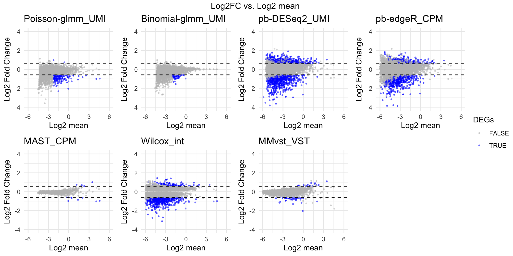
Enrichment analysis
GO object
original_gene_list = pois_glmm_df$log2FC
names(original_gene_list) = pois_glmm_df$genes
gene_list = na.omit(original_gene_list)
# sort the list in decreasing order (required for clusterProfiler)
gene_list = sort(gene_list, decreasing = TRUE)
genes = pois_glmm_df$genes[which(pois_glmm_df$hits)]
# create GO object
go_enrich = enrichGO(gene = genes,
universe = names(gene_list),
OrgDb = "org.Hs.eg.db",
keyType = 'SYMBOL',
readable = T,
ont = "BP",
pvalueCutoff = 0.05,
qvalueCutoff = 0.10)dotplot(go_enrich)
cnetplot(go_enrich, categorySize="pvalue", color.params = list(foldChange = gene_list))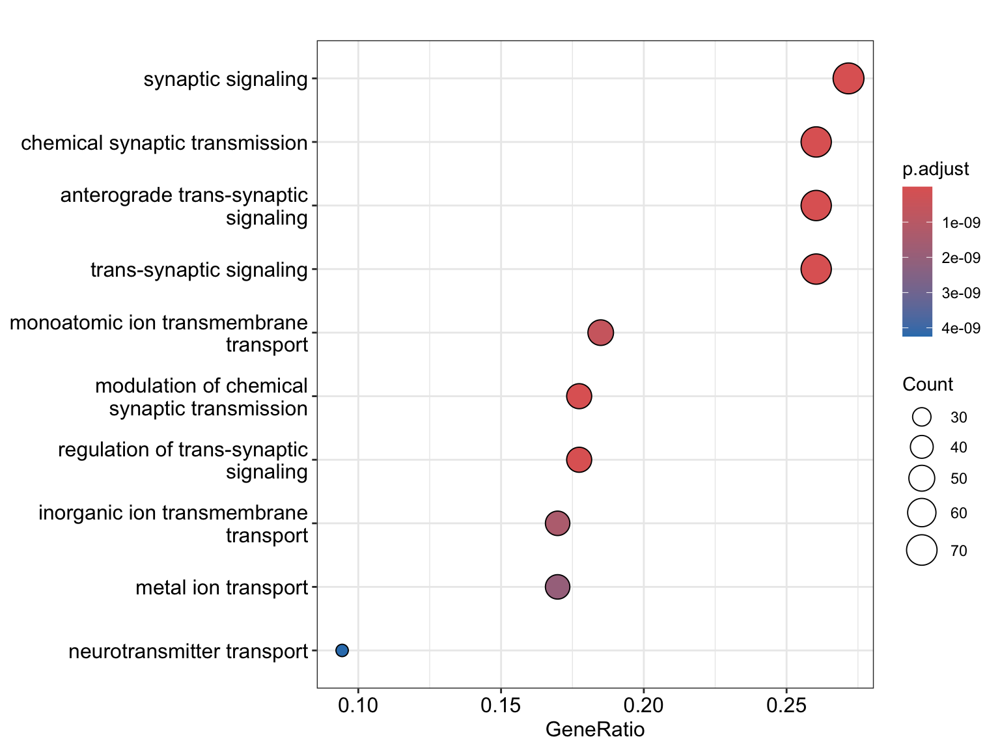
enrichKEGG object
# Convert gene IDs for enrichKEGG function
# We will lose some genes here because not all IDs will be converted
ids = bitr(names(original_gene_list), fromType = "SYMBOL", toType = "ENTREZID", OrgDb="org.Hs.eg.db") 'select()' returned 1:1 mapping between keys and columnsWarning in bitr(names(original_gene_list), fromType = "SYMBOL", toType =
"ENTREZID", : 5.09% of input gene IDs are fail to map...dedup_ids = ids[!duplicated(ids[c("SYMBOL")]),]
# Create a vector of the gene universe
match_logic = pois_glmm_df$genes %in% dedup_ids$SYMBOL
kegg_gene_list <- pois_glmm_df$log2FC[match_logic]
names(kegg_gene_list) <- dedup_ids$ENTREZID
kegg_gene_list<-na.omit(kegg_gene_list)
kegg_gene_list = sort(kegg_gene_list, decreasing = TRUE)
# hits
kegg_genes = na.omit(dedup_ids$ENTREZID[pois_glmm_df$hits[match_logic]])
# create enrichKEGG object
kk = enrichKEGG(gene=kegg_genes,
universe=names(kegg_gene_list),
organism="hsa", pvalueCutoff = 0.05, keyType = "ncbi-geneid")Reading KEGG annotation online: "https://rest.kegg.jp/link/hsa/pathway"...Reading KEGG annotation online: "https://rest.kegg.jp/list/pathway/hsa"...Reading KEGG annotation online: "https://rest.kegg.jp/conv/ncbi-geneid/hsa"...dotplot(kk,
showCategory = 10,
title = "Enriched Pathways",
font.size = 8)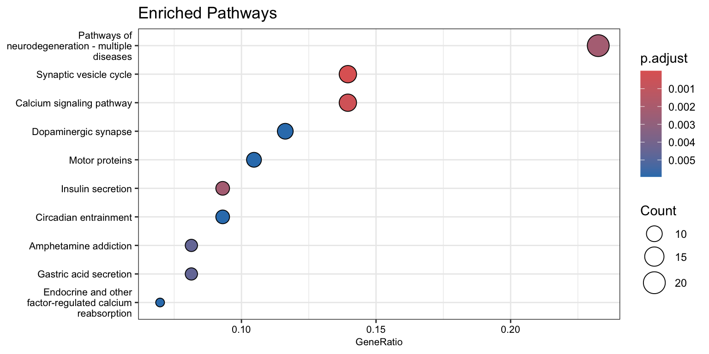
cnetplot(kk, categorySize="pvalue", foldChange=kegg_gene_list)Warning in cnetplot.enrichResult(x, ...): Use 'color.params = list(foldChange = your_value)' instead of 'foldChange'.
The foldChange parameter will be removed in the next version.
sessionInfo()R version 4.4.1 (2024-06-14)
Platform: x86_64-apple-darwin20
Running under: macOS Monterey 12.6
Matrix products: default
BLAS: /Library/Frameworks/R.framework/Versions/4.4-x86_64/Resources/lib/libRblas.0.dylib
LAPACK: /Library/Frameworks/R.framework/Versions/4.4-x86_64/Resources/lib/libRlapack.dylib; LAPACK version 3.12.0
locale:
[1] en_US.UTF-8/en_US.UTF-8/en_US.UTF-8/C/en_US.UTF-8/en_US.UTF-8
time zone: America/Chicago
tzcode source: internal
attached base packages:
[1] stats4 stats graphics grDevices utils datasets methods
[8] base
other attached packages:
[1] UpSetR_1.4.0 pathview_1.44.0
[3] org.Hs.eg.db_3.19.1 AnnotationDbi_1.66.0
[5] enrichplot_1.24.4 clusterProfiler_4.12.6
[7] reshape_0.8.9 gridExtra_2.3
[9] pheatmap_1.0.12 SingleCellExperiment_1.26.0
[11] SummarizedExperiment_1.34.0 Biobase_2.64.0
[13] GenomicRanges_1.56.2 GenomeInfoDb_1.40.1
[15] IRanges_2.38.1 S4Vectors_0.42.1
[17] BiocGenerics_0.50.0 MatrixGenerics_1.16.0
[19] matrixStats_1.4.1 ggpubr_0.6.0
[21] dplyr_1.1.4 ggplot2_3.5.1
loaded via a namespace (and not attached):
[1] bitops_1.0-9 fs_1.6.4 spatstat.sparse_3.1-0
[4] httr_1.4.7 RColorBrewer_1.1-3 Rgraphviz_2.48.0
[7] tools_4.4.1 sctransform_0.4.1 backports_1.5.0
[10] utf8_1.2.4 R6_2.5.1 lazyeval_0.2.2
[13] uwot_0.2.2 withr_3.0.1 sp_2.1-4
[16] progressr_0.14.0 cli_3.6.3 spatstat.explore_3.3-2
[19] fastDummies_1.7.4 scatterpie_0.2.4 labeling_0.4.3
[22] sass_0.4.9 KEGGgraph_1.64.0 Seurat_5.1.0
[25] spatstat.data_3.1-2 ggridges_0.5.6 pbapply_1.7-2
[28] yulab.utils_0.1.7 gson_0.1.0 DOSE_3.30.5
[31] R.utils_2.12.3 parallelly_1.38.0 rstudioapi_0.16.0
[34] RSQLite_2.3.7 generics_0.1.3 gridGraphics_0.5-1
[37] ica_1.0-3 spatstat.random_3.3-2 car_3.1-3
[40] GO.db_3.19.1 Matrix_1.7-0 fansi_1.0.6
[43] abind_1.4-8 R.methodsS3_1.8.2 lifecycle_1.0.4
[46] whisker_0.4.1 yaml_2.3.10 carData_3.0-5
[49] qvalue_2.36.0 SparseArray_1.4.8 Rtsne_0.17
[52] grid_4.4.1 blob_1.2.4 promises_1.3.0
[55] crayon_1.5.3 miniUI_0.1.1.1 lattice_0.22-6
[58] cowplot_1.1.3 KEGGREST_1.44.1 pillar_1.9.0
[61] knitr_1.48 fgsea_1.30.0 future.apply_1.11.2
[64] codetools_0.2-20 fastmatch_1.1-4 leiden_0.4.3.1
[67] glue_1.8.0 ggfun_0.1.6 spatstat.univar_3.0-1
[70] data.table_1.16.2 vctrs_0.6.5 png_0.1-8
[73] treeio_1.28.0 spam_2.11-0 gtable_0.3.5
[76] cachem_1.1.0 xfun_0.48 S4Arrays_1.4.1
[79] mime_0.12 tidygraph_1.3.1 survival_3.7-0
[82] fitdistrplus_1.2-1 ROCR_1.0-11 nlme_3.1-166
[85] ggtree_3.12.0 bit64_4.5.2 RcppAnnoy_0.0.22
[88] rprojroot_2.0.4 bslib_0.8.0 irlba_2.3.5.1
[91] KernSmooth_2.23-24 colorspace_2.1-1 DBI_1.2.3
[94] tidyselect_1.2.1 bit_4.5.0 compiler_4.4.1
[97] git2r_0.33.0 graph_1.82.0 httr2_1.0.5
[100] DelayedArray_0.30.1 plotly_4.10.4 shadowtext_0.1.4
[103] scales_1.3.0 lmtest_0.9-40 rappdirs_0.3.3
[106] stringr_1.5.1 digest_0.6.37 goftest_1.2-3
[109] spatstat.utils_3.1-0 rmarkdown_2.28 XVector_0.44.0
[112] htmltools_0.5.8.1 pkgconfig_2.0.3 highr_0.11
[115] fastmap_1.2.0 rlang_1.1.4 htmlwidgets_1.6.4
[118] UCSC.utils_1.0.0 shiny_1.9.1 farver_2.1.2
[121] jquerylib_0.1.4 zoo_1.8-12 jsonlite_1.8.9
[124] BiocParallel_1.38.0 GOSemSim_2.30.2 R.oo_1.26.0
[127] RCurl_1.98-1.16 magrittr_2.0.3 Formula_1.2-5
[130] GenomeInfoDbData_1.2.12 ggplotify_0.1.2 dotCall64_1.2
[133] patchwork_1.3.0 munsell_0.5.1 Rcpp_1.0.13
[136] ggnewscale_0.5.0 ape_5.8 viridis_0.6.5
[139] reticulate_1.39.0 stringi_1.8.4 ggraph_2.2.1
[142] zlibbioc_1.50.0 MASS_7.3-61 plyr_1.8.9
[145] parallel_4.4.1 listenv_0.9.1 ggrepel_0.9.6
[148] deldir_2.0-4 Biostrings_2.72.1 graphlayouts_1.2.0
[151] splines_4.4.1 tensor_1.5 igraph_2.0.3
[154] spatstat.geom_3.3-3 ggsignif_0.6.4 RcppHNSW_0.6.0
[157] reshape2_1.4.4 XML_3.99-0.17 evaluate_1.0.1
[160] SeuratObject_5.0.2 tweenr_2.0.3 httpuv_1.6.15
[163] RANN_2.6.2 tidyr_1.3.1 purrr_1.0.2
[166] polyclip_1.10-7 future_1.34.0 scattermore_1.2
[169] ggforce_0.4.2 broom_1.0.7 xtable_1.8-4
[172] RSpectra_0.16-2 tidytree_0.4.6 rstatix_0.7.2
[175] later_1.3.2 viridisLite_0.4.2 tibble_3.2.1
[178] aplot_0.2.3 memoise_2.0.1 cluster_2.1.6
[181] workflowr_1.7.1 globals_0.16.3